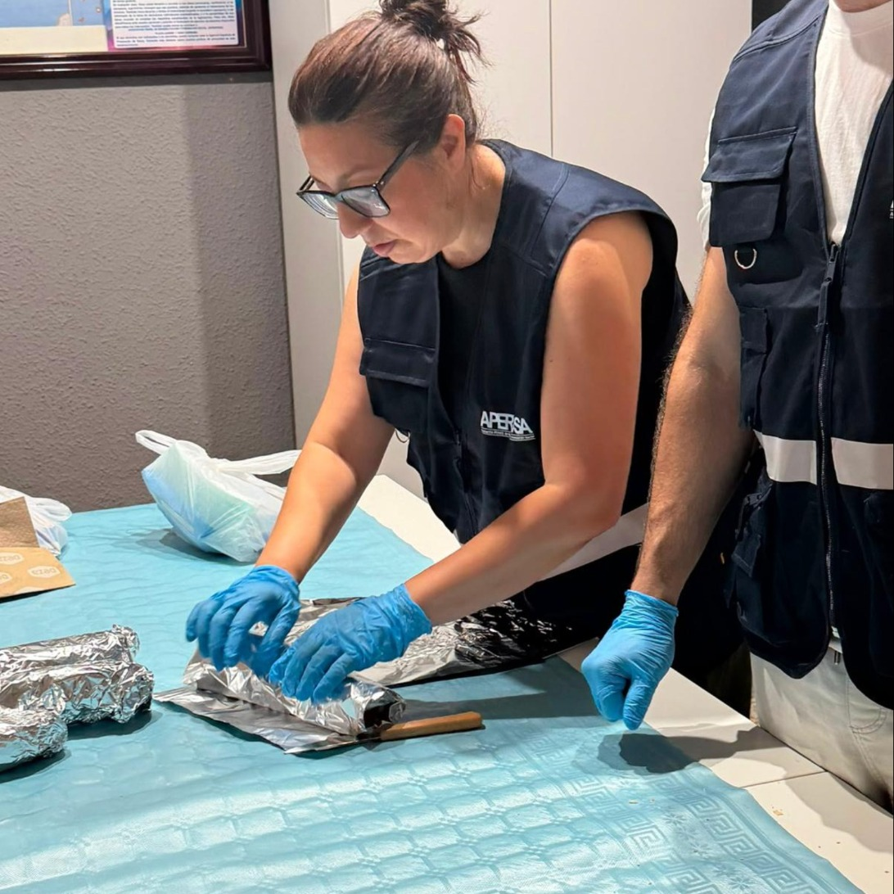
Acompañamos a personas y familias en situación de riesgo o exclusión social desde ocho áreas de trabajo.
Trabajamos para dar respuesta a los desafíos sociales de nuestro entorno. Apoyamos a personas y colectivos en situación de vulnerabilidad con un compromiso compartido que se convierte en acciones concretas.
Trabajamos en ocho áreas. Entra en la tuya para ver qué ofrecemos y cómo contactar.
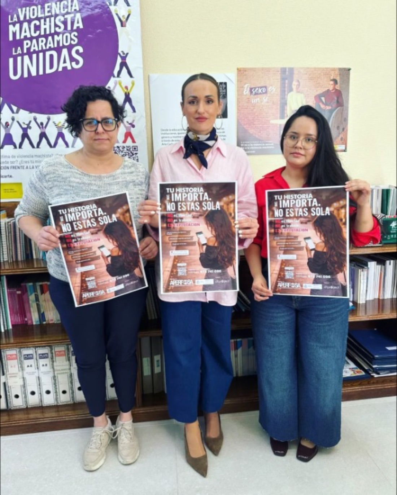
Mujer e IgualdadProtección de mujeres en situación de vulnerabilidad y prevención de la violencia de género y la trata.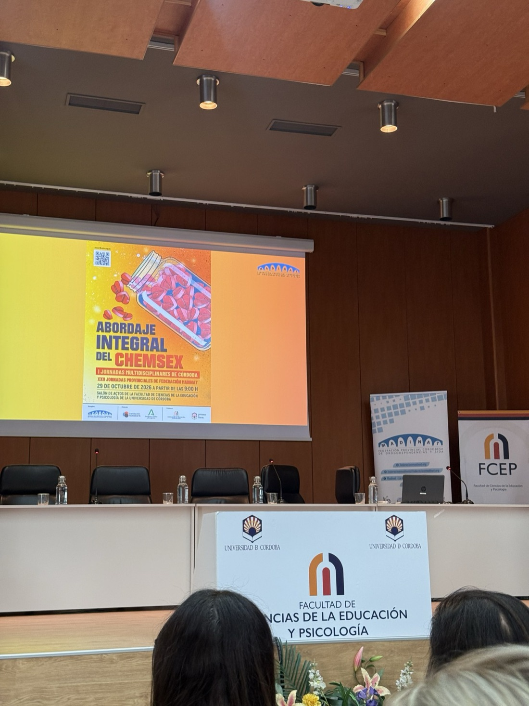
AdiccionesComunidad Terapéutica Peniel y programas de inserción.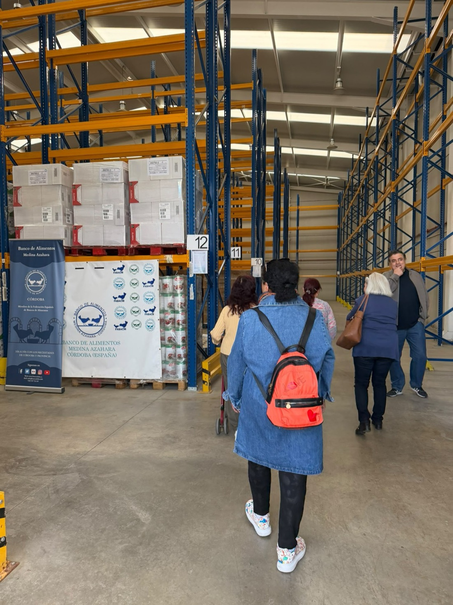
Acción SocialNecesidades básicas y acompañamiento: Urgencia Social y Conexión 1X1.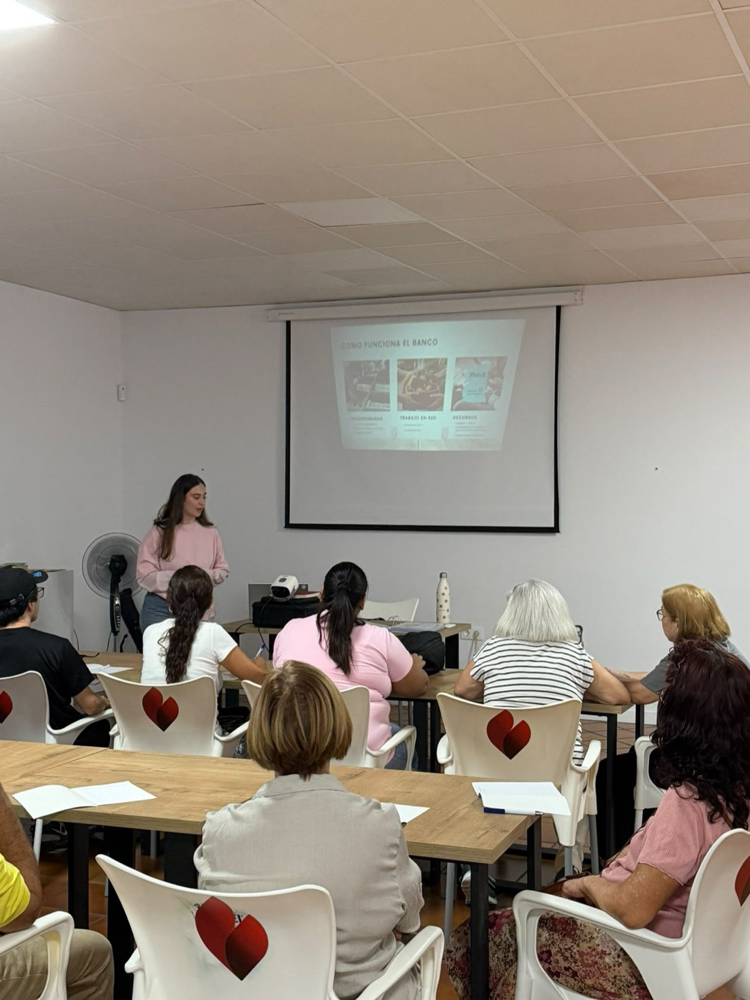
Formación e Integración SocialFormación y alfabetización para la integración. MayoresAcompañamiento a personas mayores con el programa Parakletos.
MayoresAcompañamiento a personas mayores con el programa Parakletos. Cooperación InternacionalApoyo a personas refugiadas y en situación de vulnerabilidad.
Cooperación InternacionalApoyo a personas refugiadas y en situación de vulnerabilidad.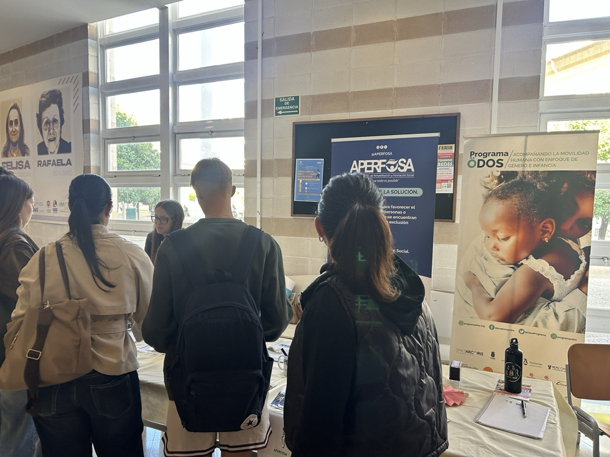
VoluntariadoPersonas que apoyan las acciones de todas las áreas.Llámanos o escríbenos y te orientamos.
Así trabajamos, en cada área y con cada persona.
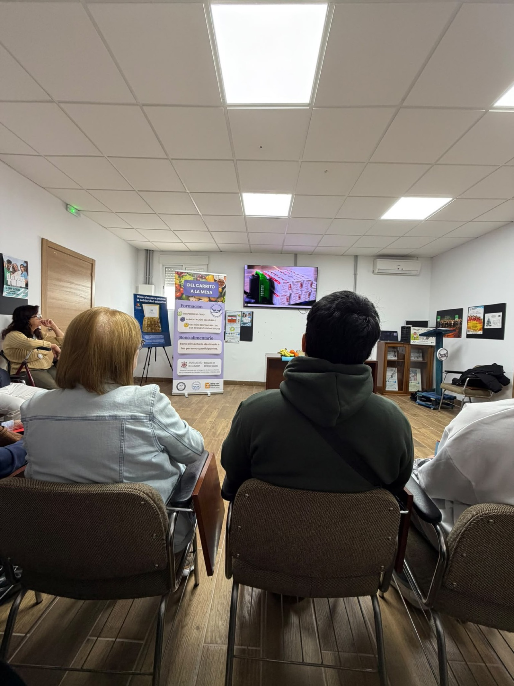
Favorecer el desarrollo integral de las personas en situación de vulnerabilidad.
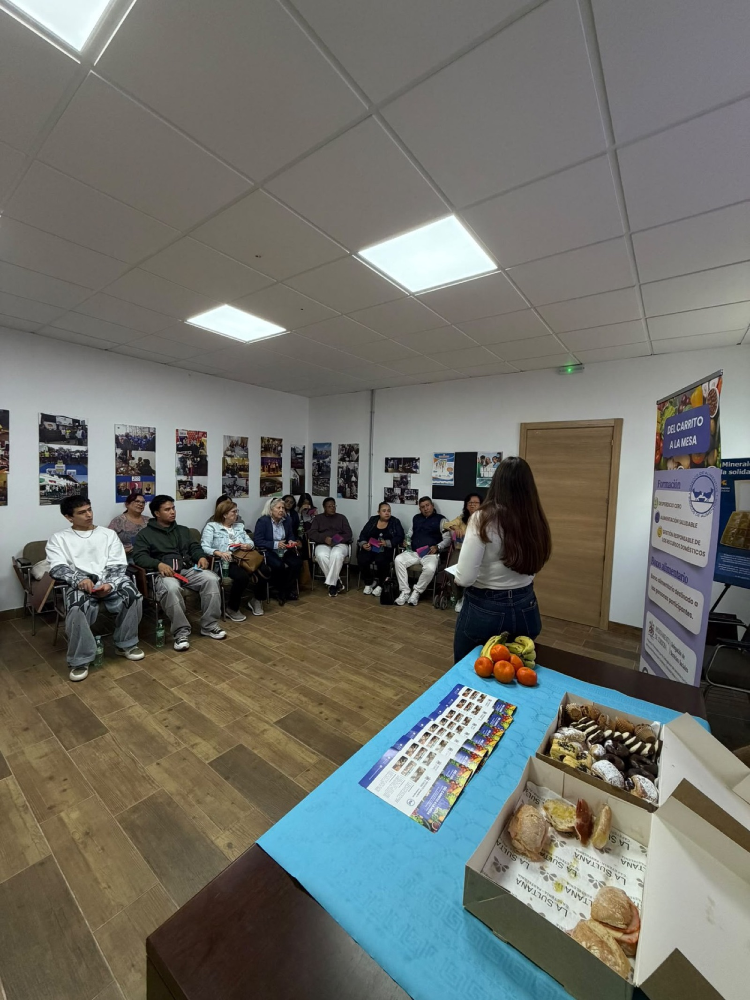
Trabajar ante los desafíos sociales de nuestro entorno desde ocho áreas de intervención.
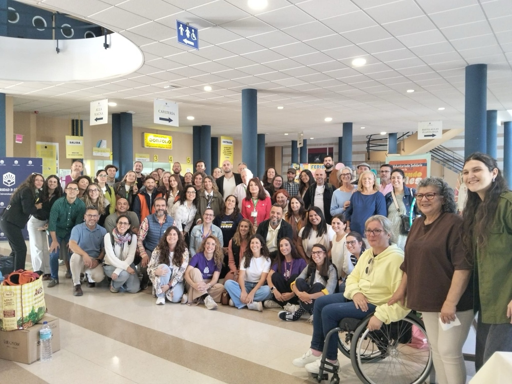
Sumar el compromiso del equipo y de las personas voluntarias en cada acción.
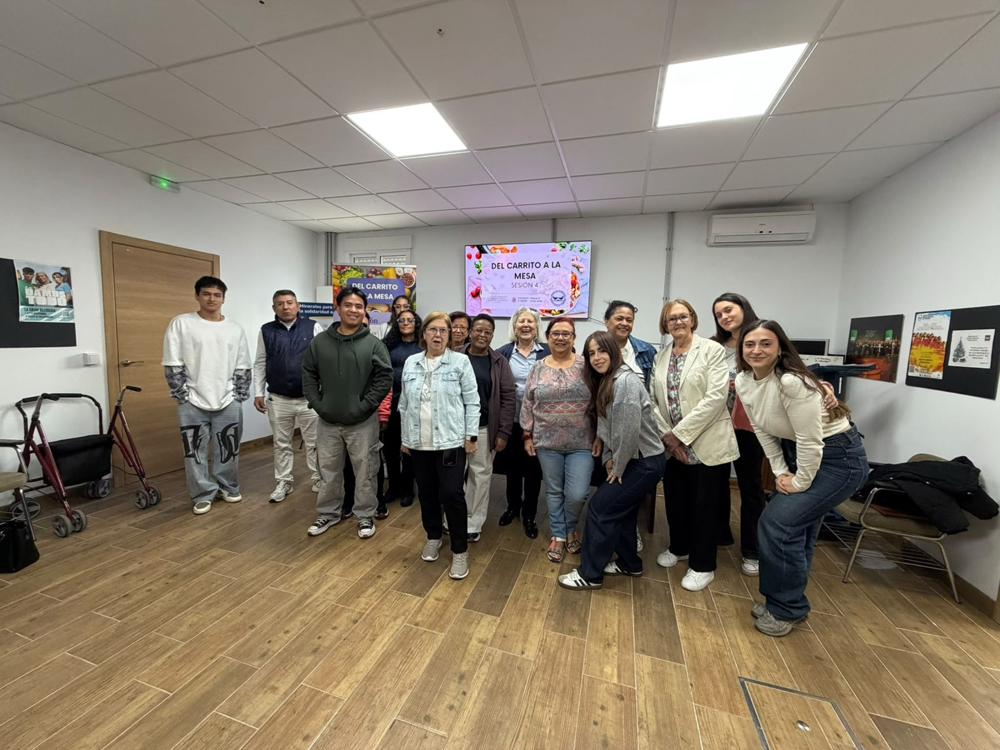
Hacer posible que más personas reciban apoyo a través del voluntariado y las aportaciones.
Tu tiempo, tu apoyo y tu compromiso nos ayudan a acompañar a más personas.
Puedes hacer un donativo por Bizum con el código 06364, con tarjeta, PayPal o transferencia. También puedes hacerte socio o socia, o sumarte como voluntario a cualquiera de las ocho áreas.
Quiero ser voluntario
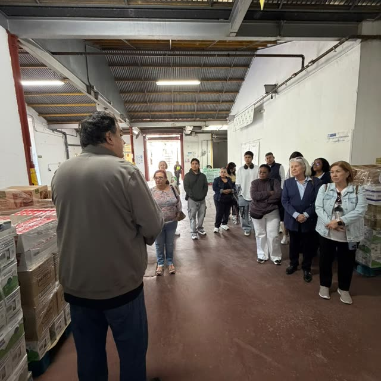

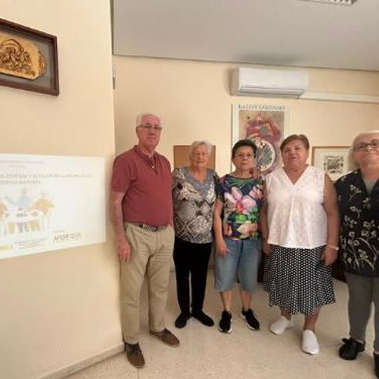

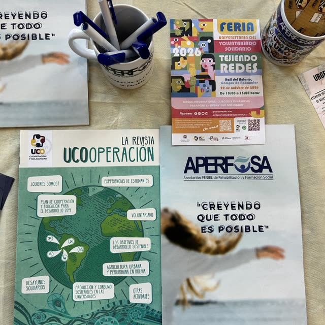

Empresas, universidades, institutos y colegios también pueden formar parte de APERFOSA: financiando un proyecto, implicando a su equipo o acercando la acción social a su alumnado.
Lo último que hemos hecho.
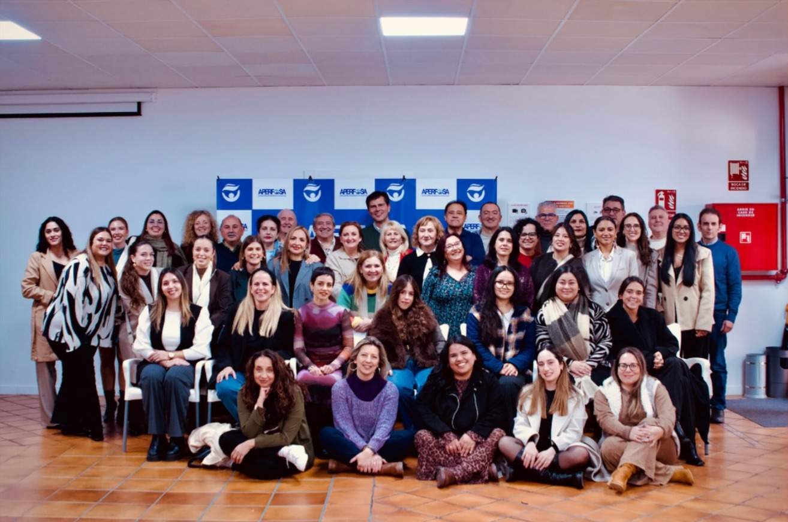
APERFOSA es la Asociación PENIEL de Rehabilitación y Formación Social. Trabajamos para dar respuesta a los desafíos sociales de nuestro entorno, cerca de las personas y de los colectivos en situación de vulnerabilidad.